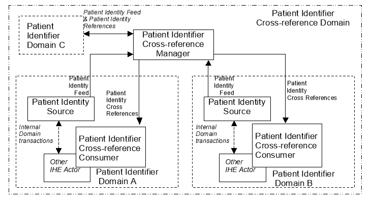
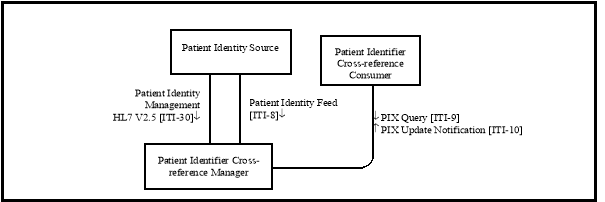
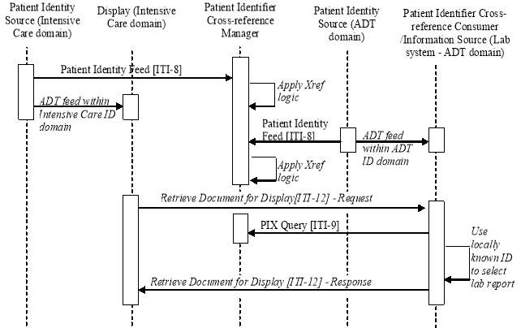
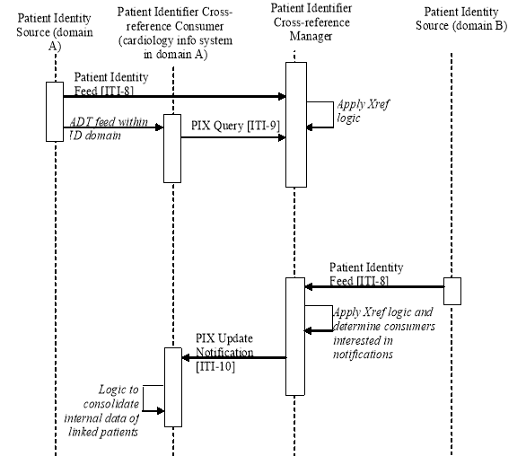
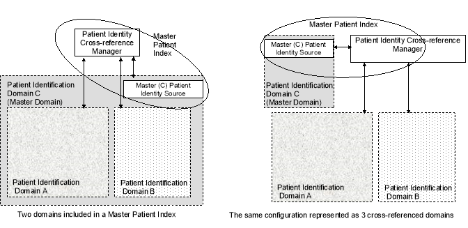

IHE IT Infrastructure (ITI)
Technical Framework
Revision 16.0 – Final Text
The Patient Identifier Cross-referencing Integration Profile (PIX) is targeted at healthcare enterprises of a broad range of sizes (hospital, a clinic, a physician office, etc.). It supports the cross-referencing of patient identifiers from multiple Patient Identifier Domains via the following interactions:
By specifying the above transactions among specific actors, this integration profile does not define any specific enterprise policies or cross-referencing algorithms. By encapsulating these behaviors in a single actor, this integration profile provides the necessary interoperability while maintaining the flexibility to be used with any cross-referencing policy and algorithm as deemed adequate by the enterprise.

The following diagram shows the intended scope of this profile (as described above).
Figure 5-1: Process Flow with Patient Identifier Cross-referencing
The diagram illustrates two types of Identifier Domains: a Patient Identifier Domain and a Patient Identifier Cross-reference Domain.
A Patient Identifier Domain is defined as a single system or a set of interconnected systems that all share a common identification scheme (an identifier and an assignment process to a patient) and issuing authority for patient identifiers. Additionally, a Patient Identifier Domain has the following properties:
A Patient Identifier Cross-reference Domain consists of a set of Patient Identifier Domains known and managed by a Patient Identifier Cross-reference Manager Actor. The Patient Identifier Cross-reference Manager is responsible for creating, maintaining and providing lists of identifiers that are aliases of one another across different Patient Identifier Domains.
The Patient Identifier Cross-reference Domain embodies the following assumptions about agreement within the group of individual Identifier Domains:
All these assumptions are critical to the successful implementation of this profile. This integration profile imposes minimal constraints on the participating Patient Identifier Domains and centralizes most of the operational constraints for the overall Patient Identification Cross-reference Domain in the Patient Identifier Cross-reference Manager Actor. If the individual Identifier Domains cannot agree to the items outlined above, implementation of this profile may not provide the expected results.
The Patient Identifier Cross-reference Manager is not responsible for improving the quality of identification information provided to it by the Identity Source Actors. It is assumed that the Identity Source Actors are responsible for providing high quality data to the Patient Identifier Cross-reference Manager. For example, the Patient Identifier Cross-reference Manager is NOT responsible to provide a single reference for patient demographics. The intent is to leave the responsibility for the quality and management of its patient demographics information and the integrity of the identifiers it uses within each Patient Identity Domain (Source actors). When receiving reports and displays from multiple PIX domains, it is inevitable that some of those reports and displays will have inconsistent names.
The Patient Identifier Cross-reference Consumer may use either a query for sets of cross-reference patient identifiers or use both a notification about cross-reference changes and a query transaction. In the case of using a notification, the Patient Identifier Cross-reference Consumer may also use the PIX Query Transaction to address situations where the Patient Identifier Cross-reference Consumer may be out of synch with the Patient Identifier Cross-reference Manager. This Integration Profile does not specify the consumer policies in using the PIX Query Transaction (ITI TF-2a: 3.9).
For a discussion of the relationship between this Integration Profile and an enterprise master patient index (eMPI) see Section 5.4.
Figure 5.1-1 shows the actors directly involved in the Patient Identifier Cross-referencing Integration Profile and the relevant transactions between them. Other actors that may be indirectly involved due to their participation in other related profiles are not shown.
Figure 5.1-1: Patient Identifier Cross-referencing Actor Diagram
Table 5.1-1 lists the transactions for each actor directly involved in the Patient Identifier Cross-referencing Profile. In order to claim support of this Integration Profile, an implementation must perform the required transactions (labeled “R”). Transactions labeled “O” are optional. A complete list of options defined by this Integration Profile and that implementations may choose to support is listed in the Section 5.2.
Table 5.1-1: Patient Identifier Cross-referencing Integration for MPI Profile - Actors and Transactions
|
Actors |
Transactions |
Optionality |
Section |
|
Patient Identity Source |
Patient Identity Feed [ITI-8] |
R |
|
|
Patient Identity Management [ITI-30] |
O |
||
|
Patient Identifier Cross-reference Consumer |
PIX Query [ITI-9] |
R |
|
|
PIX Update Notification [ITI-10] |
O |
||
|
Patient Identifier Cross-reference Manager |
Patient Identity Feed [ITI-8] |
R |
|
|
Patient Identity Management [ITI-30] |
O |
||
|
PIX Query [ITI-9] |
R |
||
|
PIX Update Notification [ITI-10] |
R |
Options that may be selected for this Integration Profile are listed in the Table 5.2-1 along with the Actors to which they apply. Dependencies between options when applicable are specified in notes.
Table 5.2-1: Patient Identifier Cross-referencing - Actors and Options
|
Actor |
Options |
Vol. & Section |
|
Patient Identity Source |
Pediatric Demographics |
|
|
Patient Identifier Cross-reference Manager |
Pediatric Demographics |
|
|
Patient Identifier Cross-reference Consumer |
PIX Update Notification |
The experience of immunization registries and other public health population databases has shown that matching and linking patient records from different sources for the same individual person in environments with large proportions of pediatric records requires additional demographic data.
In particular, distinguishing records for children who are twins, triplets, etc. – that is, avoiding false positive matches - may be difficult because much of the demographic data for the two individuals matches. For instance, twin children may have identical last names, parents, addresses, and dates of birth; their first names may be very similar, possibly differing by only one letter. It can be very difficult for a computer or even a human being to determine in this situation whether the slight first name difference points to two distinct individuals or just a typographical error in one of the records. Additional information is extremely helpful in making this determination.
Pediatric Demographics makes use of the following six additional demographic fields to aid record matching in databases with many pediatric records.
Table 5.2.1-1: Additional Patient Demographics Fields
|
Field |
Reason for inclusion |
Value |
|
Mother’s Maiden Name |
Any information about the mother is helpful in making a match |
Helps create true positive matches |
|
Patient Home Telephone |
A telecom helps match into the right household |
Helps create true positive matches |
|
Patient Multiple Birth Indicator |
Indicates this person is a multiple - twin, triplet, etc. |
Helps avoid false positive matches of multiples |
|
Patient Birth Order |
Distinguishes among those multiples. |
Helps avoid false positive matches of multiples |
|
Last Update Date/Time, Last Update Facility |
These fields, although not strictly demographic, can effectively substitute when multiple birth indicator and birth order are not collected. They indirectly provide visit information. Provider visits on the same day may likely indicate two children brought to a doctor together. |
Helps avoid false positive matches of multiples |
Patient Identity Source Actors which support the Pediatric Demographics Option are required to support the Patient Identity Management [ITI-30] transaction and shall provide values, when available, for the fields identified as Pediatric Demographics fields.
Patient Identifier Cross-reference Manager Actors which support the Pediatric Demographics Option are required to support the Patient Identity Management [ITI-30] transaction, and if values for one or more of the Pediatric Demographics fields are specified in the Patient Identity Management [ITI-30] transaction, they shall be considered as part of the matching algorithm of the PIX Manager.
Pediatric Demographics are defined as all of the following:
Pediatric Demographic is particularly focused on two data issues:
The following sections describe use cases that this profile addresses.
A clinician in the Intensive Care Unit at General Hospital is reviewing a patient chart on the Intensive Care information system and wishes to review or monitor the patient’s glucose level, which is included in a laboratory report stored in the hospital’s main laboratory system. The Intensive Care system needs to map its own patient ID, which it generates internally, to the patient’s medical record number (MRN), which is generated from the hospital’s main ADT system and is used as the patient identity by the lab system. In this case the Intensive Care system is essentially in a different identifier domain than the rest of the hospital since it has its own notion of patient identity.
In this scenario, the hospital’s main ADT system (acting as a Patient Identity Source) would provide a Patient Identity Feed (using the patient’s MRN as the identifier) to the Patient Identifier Cross-reference Manager. Similarly, the Intensive Care system would also provide a Patient Identity Feed to the Patient Identifier Cross-reference Manager using the internally generated patient ID as the patient identifier and providing its own unique identifier domain identifier.
Once the Patient Identifier Cross-reference Manager receives the Patient Identity Feed transactions, it performs its internal logic to determine which, if any, patient identifiers can be “linked together” as being the same patient based on the corroborating information included in the Feed transactions it has received. The cross-referencing process (algorithm, human decisions, etc.) is performed within the Patient Identifier Cross-reference Manager and is outside the scope of IHE. (See ITI TF-2a: 3.9.4.2.2.6 for a more complete description of the scope of the cross-referencing logic boundary).
The Intensive Care system wants to get lab information associated with a patient that the Intensive Care system knows as patient ID = ‘MC-123’. It requests the lab report from the lab system using its own patient ID (MC-123) including the domain identifier/ assigning authority. Upon receipt of the request, the lab system determines that the request is for a patient outside of its own identifier domain ( ADT Domain ). It requests a list of patient ID aliases corresponding to patient ID = ‘MC-123’ (within the “ Intensive Care domain ”) from the Patient Identifier Cross-reference Manager. Having linked this patient with a patient known by medical record number = ‘007’ in the ‘ ADT Domain ’, the Patient Identifier Cross-reference Manger returns this list to the lab system so that it may retrieve the lab report for the desired patient and return it to the Intensive Care system. Figure 5.3-1 illustrates this process flow.
Figure 5.3-1: Multiple ID Domains in a Single Facility Process Flow in PIX Profile
Note: Request and Response portions of the Retrieve Document for Display transaction are not part of this profile and included for illustration purposes only.
A healthcare enterprise is established by the consolidation of two hospitals, each having its own separate patient registration process run by different hospital information systems. When a patient is treated in one hospital, the access to its electronic records managed by the other hospital is necessary. The following use case illustrates this scenario.
Hospitals A and B have been consolidated and have a single Patient Identifier Cross-reference Manager that maintains the ID links between the two hospitals. Each hospital has a different HIS that is responsible for registering patients, but they have consolidated their cardiology information systems. The cardiology system has been configured with a Patient Identifier Cross-reference Consumer to receive patient identity notifications when cross-referencing activity occurs.
A patient is registered and then has some diagnostic stress tests done at hospital A. The cardiology information system queries the Patient Identifier Cross-reference Manager to get a list of possible ID aliases for the patient to see if any past cardiology reports may be available. No patient ID aliases are found. Sometime later the same patient goes to hospital B to have a second diagnostic stress test done. The patient is registered via the HIS in hospital B which then sends that identity information to the Patient Identifier Cross-reference Manager. The Patient Identifier Cross-reference Manager determines this is in fact the same patient as was registered previously at hospital A. The cardiology information system was previously configured with the Patient Identifier Cross-reference Manager to receive notifications; thus a notification is sent to the cardiology system to inform it of the patient identifier aliases. This notification is done to allow systems that are aware of multiple identifier domains to maintain synchronization with patient identifier changes that occur in any of the identifier domains that they are aware of.
Figure 5.3-2 illustrates the process flow for this use case.
Figure 5.3-2: Multiple ID Domains Across Cooperating Enterprises Process Flow in PIX Profile
Note: PIX Update Notifications are not sent for the first Patient Identity Feed for a patient, since no cross-referencing activity occurred after this first Patient Identity Feed Transaction.
The following sections describe use cases that the Pediatric Demographics Option addresses.
A regional Immunization Information System (IIS) receives birth registry information about a pair of twins. These twins are named “Lalainne” and “Lalannie” Smith. All of the data elements in the received registration are populated, and they are all identical, except for the Given Name, the Birth Order, and the Birth Certificate #. The IIS cross-referencing system can clearly identify this very similar data as belonging to two separate individuals, because they are both flagged as having been part of a Multiple Birth, their Birth Order numbers are different, and their Birth Certificate #s are different.
A couple years later, the mother of these two twins, who has now divorced and remarried, takes them to Pediatric Healthcare, where they get the immunizations appropriate for 2-year olds. Pediatric Healthcare completes a registration for each of them, and submits the resulting data to the IIS. This data has their new Family Name as “Gomez,” but the clerks had appropriately recorded the Birth Order of each twin. Again, the IIS was able to distinguish the two registration records as belonging to separate individuals, and it was able to match them up to their earlier records because the mother’s Maiden Name was present in both the earlier records and the records submitted from Pediatric Healthcare. Pediatric Healthcare was able to download the full immunization history of each twin.
The Jackson County Health Department puts on an annual Health Fair in a shopping mall every August, partly to screen school age children for the minimum shots required for admission to the first grade. Mrs. Gomez is now working to pay for her new apartment, but her sister-in-law takes the children to the Health Fair where they are given shots based on the paper “yellow card” the sister-in-law brings with the two twins. Jackson County Health Department staff records the children’s names, and the shots they were given. This information is entered into the computer back at the Clinic the next day, and submitted to the regional IIS.
At this point, even though both children’s names were misspelled as “Lane” and “Lanna”, the Immunization Registry was again able to recognize that the records belonged to twins rather than the same person because, although the demographic data was almost identical, the Last Update Date/Time were very close (Date was the same) and Last Update Facility indicated the same clinic. Unfortunately, they didn’t write down the mother’s information at the Health Fair, but recorded her sister-in-law’s name and address instead, so the Immunization Registry was not able to automatically link this new information to the information it already had for “Lalainne” and “Lalannie”.
Other Possibilities:
A better outcome could have happened if the clinic had recorded any one of several different data elements that would have helped tie this new data to the previous data. Any one of the Mothers Maiden Name (even the Mother’s First Name component), the Home Phone Number, or the unique identifier for the kids which was printed on the “yellow card” from Pediatric Healthcare would have helped.
The PIX Integration Profile achieves the integration of disparate Patient Identifier Domains by using a cross-referencing approach between Patient Identifiers associated with the same patient. This section discusses how this approach is compatible with environments that wish to establish master patient identifiers (MPI), or enterprise MPI (eMPI) systems. An eMPI may be considered a particular variation in implementation of the PIX Integration Profile.
The concept of an MPI is a rather broad concept, yet it is most often associated with the creation of a master patient identifier domain. Such a master domain is considered more broadly applicable or more “enterprise-level” than the other patient identifier domains it includes. Such a hierarchical inclusion of patient identification domains into a “master patient identification domain” can be considered a particular case of patient cross-reference, where the patient identifiers in the various domains are cross-referenced to the patient identifiers of the master domain. Two possible configurations are depicted by Figure 5.4-1.
 Figure 5.4-1: PIX Profile Relationship to eMPI
Figure 5.4-1 above shows how the Master Patient Identifier Domain (Domain C), in a typical MPI approach, is simply another patient Identification Domain when considered in a Cross-referencing approach. The decision to place enterprise-wide systems such as Clinical Data Repositories into the so-called master domain is simply a configuration choice. In addition, such a configuration sometimes assumes that any system in Patient Domain A not only manages the patient Identifiers of Domain A but is also aware of those of Domain C. In the Patient Identifier Cross-reference Integration Profile, this is a configuration choice where certain systems have been designed and configured to operate across multiple domains. Thus the entity often called an MPI (shown by the oval) is actually the combination of a Patient Identity Source (ADT) along with a Patient Identifier Cross-reference Manager.
The PIX Integration Profile can coexist with environments that have chosen to deploy a distinct MPI, and provides a more scalable approach. Many other configurations can also be deployed, in particular those where the creation of a master domain “including” the other domains is not necessary (i.e., a simple federation of domains where none is actually the master).